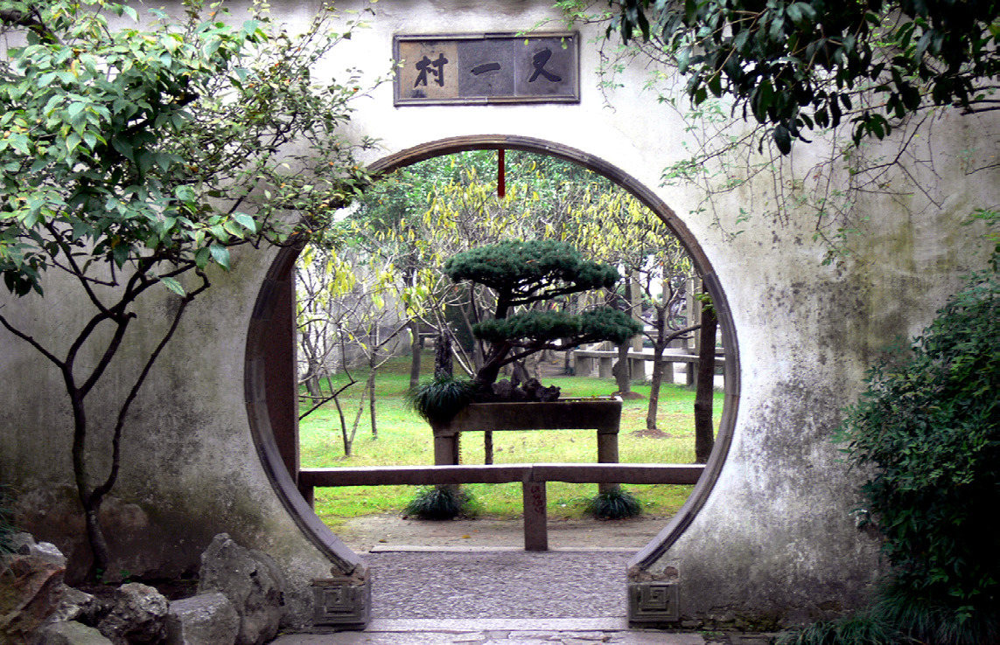
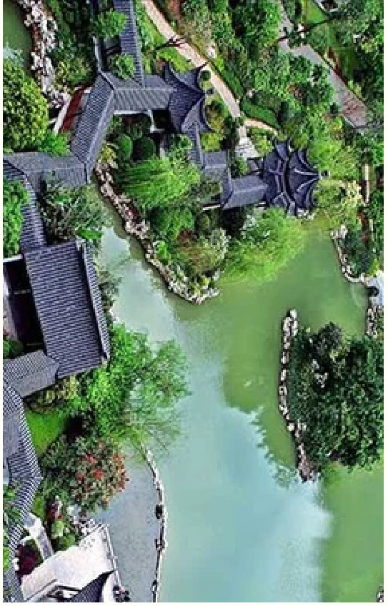
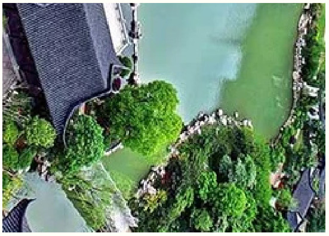
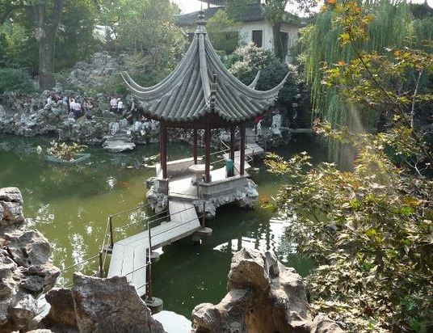
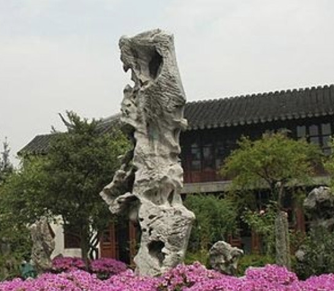
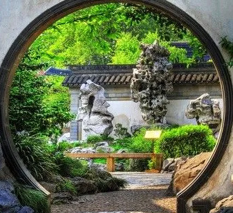
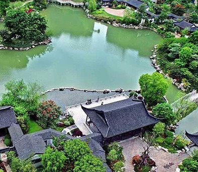
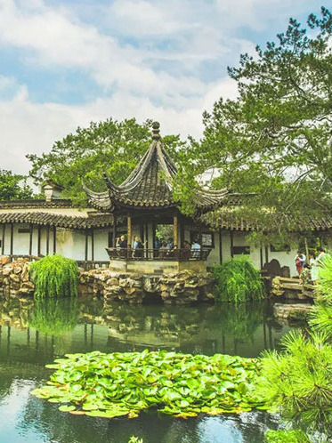

These masterpieces of landscape architecture were primarily built by scholars and wealthy merchants between the 11th and 19th centuries, creating miniature worlds that harmonize human artistry with natural beauty.
In 1997 and 2000, nine of these gardens were collectively designated as UNESCO World Heritage Sites, recognizing their outstanding universal value to humanity.
The tradition of garden building in Suzhou dates back to the 6th century BCE when the city was founded as the capital of the Wu Kingdom. Initially inspired by royal hunting gardens, private gardens began emerging around the 4th century and reached their peak during the Ming and Qing dynasties (14th-19th centuries).
The gardens flourished particularly during the mid-Ming to early-Qing period, resulting in approximately 200 private gardens throughout the city.

世界遺產地位
UNESCO World Heritage Status
The Classical Gardens of Suzhou were inscribed on the UNESCO World Heritage List in two phases: the first four gardens (Humble Administrator’s Garden, Lingering Garden, Master of Nets Garden, and Mountain Villa with Embracing Beauty) in 1997, followed by five additional gardens in 2000. This prestigious designation recognizes their “outstanding universal value” and places them among humanity’s most significant cultural treasures.
UNESCO’s citation acknowledges these gardens as “masterpieces of Chinese landscape garden design” that “represent the development of Chinese landscape garden design over more than two thousand years.” The gardens are celebrated for their ability to “recreate natural landscapes in miniature” while embodying “the profound metaphysical importance of natural beauty in Chinese culture.”


拙政園
Humble Administrator’s Garden
建於1509年（明代）
面積52,000 m²
蘇州規模最大、最負盛名的園林。池水浩渺，亭臺錯落，空間迴環相通，構成一幅宛如傳統山水畫的和諧景致。
網師園
Master of the Nets Garden
Built: 12th Century (Southern Song Dynasty) | Size: 5,400 m² Smallest garden in Suzhou but known for its brilliant spatial design, making a limited space feel much larger. Famous for nighttime performances featuring traditional music and Kunqu opera.
Built: 1874 (Qing Dynasty) | Size: 3,300 m² A romantic garden built for a scholar and his wife, symbolizing companionship and love. Located along the Suzhou canals, allowing visitors to enter by boat.
Built: 1044 (Song Dynasty) | Size: 10,650 m² Oldest surviving garden in Suzhou, emphasizing natural scenery and simplicity. Features a famous pavilion with poetic inscriptions, reflecting the scholarly lifestyle of its original owner.
退思園
The Garden of the Retreat and Reflection
Built: 1885 (Qing Dynasty) | Size: 4,100 m² Located in Tongli, a water town near Suzhou, this garden was built by an official after retiring from politics. Known for its exquisite wood carvings and delicate latticework in the buildings.
環秀山莊
Mountain Villa with Embracing Beauty
建於1889年（清代）
面積2,700 m²
現位於刺繡博物館內，昔日為一位清代官員的宅邸。尤以假山疊石著稱，令園林顯得遠比實際廣闊。
The Classical Gardens of Suzhou have inspired countless poems, paintings, and literary works throughout Chinese history. Famous poets like Bai Juyi, Su Dongpo, and Tang Bohu wrote verses specifically about these gardens, while scholars and artists created paintings depicting their beauty.
These literary and artistic works have become inseparable from the gardens themselves, adding layers of cultural meaning to the physical spaces.
園林詩文
Garden Poetry and Literature

Ponds and streams form the central element in most gardens, symbolizing the life-giving force of nature. The Humble Administrator’s Garden particularly emphasizes water features as its main background.
水景
Water Features:
廊橋
Corridors and Bridges:
Winding covered walkways connect different areas of the gardens, framing views and providing shelter during inclement weather. The Lingering Garden is known for its corridors that create an illusion of endless space.
假山
Rockeries:
精心堆疊的山石多取自太湖，構築出人造的山巒與洞壑。獅子林以形似群獅的假山聞名，其間暗道與隧洞縱橫。
建築元素
Architectural Elements
Carefully selected vegetation includes pine trees (symbolizing longevity), bamboo (representing resilience), plum blossoms (signifying perseverance), and lotus flowers (symbolizing purity). These plants not only beautify the gardens but also carry symbolic meanings.
花木
Plants:
These structures provide places for contemplation, social gatherings, and artistic pursuits. Each building is strategically placed to offer optimal views of the garden landscape.
亭臺樓閣
Pavilions and Halls:

文化意義
Cultural Significance
文人隱逸
Scholarly Retreat:
Many gardens were built by retired officials or scholars seeking a peaceful environment for contemplation, study, and artistic pursuits.
哲學表達
Philosophical Expression:
園林體現了道家天人合一的理念、儒家的秩序與等級觀念，以及佛家的禪修與覺悟思想。
藝術融合
Artistic Integration:
These gardens represent a synthesis of various art forms including architecture, landscape design, calligraphy, poetry, and painting. Each garden tells a story through its layout and features.
社交功能
Social Function:
Besides being private retreats, these gardens served as venues for social gatherings, cultural exchanges, and artistic performances. The Master of Nets Garden continues this tradition with its nighttime performances of traditional music and Kunqu opera.
This is embodied in an international treaty called the Convention concerning the Protection of the World Cultural and Natural Heritage, adopted by UNESCO in 1972.
Cultural heritage refers to monuments, groups of buildings, and sites with historical, aesthetic, archaeological, scientific, ethnological, or anthropological value.
Natural heritage refers to outstanding physical, biological, and geological formations, habitats of threatened species of animals and plants, and areas with scientific, conservation, or aesthetic value.
To be included on the World Heritage List, sites must be of outstanding universal value and meet at least one out of ten selection criteria. These criteria are explained in the Operational Guidelines for the Implementation of the World Heritage Convention which, besides the text of the Convention, is the main working tool on World Heritage. The criteria are regularly revised by the Committee to reflect the evolution of the World Heritage concept itself.
Until the end of 2004, World Heritage sites were selected on the basis of six cultural and four natural criteria. With the adoption of the revised Operational Guidelines for the Implementation of the World Heritage Convention, only one set of ten criteria exists.

世界遺產的使命
UNESCO’s World Heritage mission is to:
鼓勵各國簽署《世界遺產公約》，並確保其自然與文化遺產得到保護；
Encourage States Parties to the Convention to nominate sites within their national territory for inclusion on the World Heritage List;
Assist States Parties in safeguarding World Heritage sites by providing technical assistance and professional training;
Encourage States Parties to establish management plans and set up reporting systems on the state of conservation of their World Heritage sites;
為面臨迫切危險的世界遺產地提供緊急援助；
Encourage participation of the local population in the preservation of their cultural and natural heritage;
Support States Parties’ public awareness-building activities for World Heritage conservation;
Encourage international cooperation in the conservation of our world’s cultural and natural heritage.

評選標準
Selection criteria:
(i) represent a masterpiece of human creative genius;
(iii) bear a unique or at least exceptional testimony to a cultural tradition or to a civilization which is living or which has disappeared;
(vi) be directly or tangibly associated with events or living traditions, with ideas, or with beliefs, with artistic and literary works of outstanding universal significance. (The Committee considers that this criterion should preferably be used in conjunction with other criteria);
（四）是一種建築、建築群、技術整體或景觀的傑出範例，展現人類歷史上一個（或多個）重要階段；
(v) be an outstanding example of a traditional human settlement, land-use, or sea-use which is representative of a culture (or cultures), or human interaction with the environment especially when it has become vulnerable under the impact of irreversible change;
(vii) contain superlative natural phenomena or areas of exceptional natural beauty and aesthetic importance;
(viii) be outstanding examples representing major stages of earth’s history, including the record of life, significant on-going geological processes in the development of landforms, or significant geomorphic or physiographic features;
(ix) be outstanding examples representing significant on-going ecological and biological processes in the evolution and development of terrestrial, fresh water, coastal and marine ecosystems and communities of plants and animals;
The protection, management, authenticity and integrity of properties are also important considerations.
Since 1992 significant interactions between people and the natural environment have been recognized as cultural landscapes.

簡史
A Brief History
1959
1965
1966
UNESCO launches an international campaign and collects US$80 million to save the Abu Simbel temples in the Nile valley. A draft of the convention on the protection of cultural heritage is prepared.
A White House Conference in Washington, D.C., in 1965 called for a ‘World Heritage Trust’ to protect ‘natural and scenic areas and historic sites.’
聯合國教科文組織發起國際行動，拯救遭受嚴重水災威脅的威尼斯。
1962
1968
UNESCO presents its Recommendation on the Safeguarding of the Beauty and Character of Landscapes and Sites. This recommendation covers the preservation and the restoration of the aspect of natural, rural and urban landscapes and sites, whether natural or man-made, which have a cultural or aesthetic interest or form typical natural surroundings.
IUCN develops a proposal similar to the ‘World Heritage Trust’ for its members.
First twelve sites are inscribed on the World Heritage List.
1994
UNESCO launches the Young People’s Participation in World Heritage Preservation and Promotion Project with the aim to develop new educational approaches to mobilize young people in becoming involved in the protection and promotion of heritage.
The United Nations proclaims 2002 the International Year for Cultural Heritage.
1994
2002
To mark the 30th anniversary of the World Heritage Convention, UNESCO, with the help of the Italian Government, organizes in Venice the International Congress “World Heritage: Shared Legacy, Common Responsibility,” with the objective to assess the past 30 years of implementation of the World Heritage Convention and to strengthen partnerships for World Heritage conservation.
The Global Strategy for a Balanced and Representative World Heritage List is adopted by the World Heritage Committee with the goal of achieving better regional balance and greater thematic diversity in the World Heritage List. It encourages the nomination of sites in underrepresented parts of the world and especially in categories which are not yet fully represented on the List.
瀕危世界遺產名錄
List of World Heritage Sites in Danger
Armed conflict and war, earthquakes and other natural disasters, pollution, poaching, uncontrolled urbanization and unchecked tourist development pose major problems to World Heritage sites. These can threaten the very characteristics for which a site was originally inscribed on the World Heritage List. Dangers can be ‘ascertained’, referring to specific and proven imminent threats, or ‘potential’, when a property is faced with threats which could have negative effects on its World Heritage values.
列入瀕危名錄的若干案例：
Some illustrative cases of sites inscribed on the List of World Heritage in Danger:
This cultural landscape was inscribed on the List of World Heritage in Danger in 2003 simultaneously with its inscription on the World Heritage List. The property is in a fragile state of conservation considering that it has suffered from abandonment, military action and dynamite explosions. Parts of the site are inaccessible due to the presence of antipersonnel mines. UNESCO, at the request of the Afghan Government, coordinates all international efforts to safeguard and enhance Afghanistan’s cultural heritage, notably in Bamiyan.
阿富汗巴米揚山谷
Bamiyan Valley in Afghanistan:
The exceptional urban and architectural heritage of Kathmandu, Patan and Bhaktapur has been severely affected by uncontrolled urban development. The property is composed of seven Monument Zones, which, since the time of inscription in 1979, have unfortunately been seriously altered, resulting in a general loss of authenticity and integrity of the property as a whole. For these reasons the site was inscribed on the List of World Heritage in Danger in 2003. UNESCO is working with the Nepalese authorities to help them develop a long-term management plan to conserve the remaining World Heritage values of the property and adopt corrective measures to address illegal building activities.
The outstanding archaeological and historical heritage of Zabid has seriously deteriorated in recent years. Indeed, 40% of its original houses have been replaced by concrete buildings. In 2000, at the request of the State Party, the Historic Town of Zabid was inscribed on the List of World Heritage in Danger. UNESCO is helping the local authorities to develop an urban conservation plan and to adopt a strategic approach for the preservation of this World Heritage site.
葉門宰比德歷史古城
Historic Town of Zabid in Yemen:
Commercial and agricultural intrusions into the site threaten the World Heritage values for which it had been inscribed in 1982. The advancing agricultural frontier at the west side of the reserve, pushed by small farmers and cattle ranchers, is already reducing the Reserve’s forest area. The southern and western zones of the Reserve are subject to massive extraction of precious wood such as the caoba. The site was thus inscribed on the List of World Heritage in Danger in 1996. An eleven-point corrective action plan has been elaborated and the management plan for Rio Platano is being carried out with a World Heritage Fund contribution.
宏都拉斯里奧普拉塔諾生物圈保護區
Rio Platano Biosphere Reserve in Honduras:
Since 1994, all five World Heritage sites of the DRC were inscribed on the List of World Heritage in Danger as a result of the impact of the war and civil conflicts in the Great Lakes region. In 1999, an international safeguarding campaign was launched by UNESCO together with a number of international conservation NGOs to protect the habitat of endangered species such as the mountain gorilla, the northern white rhino and the okapi. This resulted in a 4-year US$3.5 million emergency programme to save the five sites, funded by the United Nations Foundation and the Government of Belgium. In 2004, international donors, non-governmental organizations and the governments of Belgium and Japan pledged an additional US$50 million to help the Democratic Republic of the Congo rehabilitate these World Heritage parks.
剛果民主共和國五處國家公園及保護區
National Parks of Garamba, Kahuzi-Biega, Salonga, Virunga and the Okapi Wildlife Reserve in the Democratic Republic of the Congo:
成功案例
SUCCESS STORIES
《世界遺產公約》不僅是「紙上文字」，更是保護瀕危遺址與物種的有力行動工具。
By recognizing the outstanding universal value of a site, States Parties commit to its preservation and strive to find solutions for its protection.
If a site is inscribed on the List of World Heritage in Danger, the World Heritage Committee can take immediate action to address the situation and this has led to many successful restorations. The World Heritage Convention is also a very powerful tool to rally international attention and actions through international safeguarding campaigns.
These pyramids were threatened in 1995 by a highway project near Cairo which would have seriously damaged the values of this archaeological site. Negotiations with the Egyptian Government resulted in a number of alternative solutions which replaced the disputed project.
This Park provides refuge for about 400 greater one-horned rhinoceros characteristic of South Asia. The World Heritage Committee, in the early 1990s, questioned the findings of the environmental impact assessment of the proposed Rapti River Diversion Project. The Asian Development Bank and the Government of Nepal revised the assessment and found that the River Diversion project would threaten riparian habitats critical to the rhino inside Royal Chitwan. The project was thus abandoned and this World Heritage site was saved for the benefit of future generations.
尼泊爾皇家奇特旺國家公園
Royal Chitwan National Park in Nepal:
At the time of its nomination in 1987, plans were underway to build an aluminium plant nearby the site. The Greek Government was invited to find another location for the plant, which it did, and Delphi took its rightful place on the World Heritage List.
Mount Kenya National Park/Natural Forest in Kenya:
The nomination of this site was first referred back to the State Party on the basis of findings during the evaluation that suggested there were serious threats to the site, primarily illegal logging and marijuana cultivation inside the Park. The State Party responded with an action plan which included provision of additional vehicles, increased patrols, community awareness projects, training of forest guards and a review of the policy affecting the adjacent forest reserve. Based on these assurances, the Committee inscribed the site in 1997.
Today, some threats still remain but there has been significant progress in the management of the site.
成功修復
Successful restorations
One of the most important archaeological sites in South-East Asia, Angkor Archaeological Park contains the magnificent remains of the different capitals of the Khmer Empire, from the 9th to the 15th century. In 1993, UNESCO embarked upon an ambitious plan to safeguard and develop the historical site carried out by the Division of Cultural Heritage in close cooperation with the World Heritage Centre.
The ‘pearl of the Adriatic’, dotted with beautiful Gothic, Renaissance and Baroque buildings had withstood the passage of centuries and survived several earthquakes. In November and December 1991, when seriously damaged by artillery fire, the city was immediately included on the List of World Heritage in Danger.
With UNESCO providing technical advice and financial assistance, the Croatian Government restored the facades of the Franciscan and Dominican cloisters, repaired roofs and rebuilt palaces. As a result, in December 1998, it became possible to remove the city from the List of World Heritage in Danger.
克羅埃西亞杜布羅夫尼克古城
Old City of Dubrovnik in Croatia:
This huge crater with the largest concentration of wild animals in the world was listed as an endangered site in 1984 because of the overall deterioration of the site due to the lack of management.
經持續監測與技術合作，至1989年情況已有改善，該地遂從《瀕危世界遺產名錄》中移除。
坦尚尼亞聯合共和國恩戈羅恩戈羅保護區
Ngorongoro Conservation Area in the United Republic of Tanzania:
波蘭維利奇卡鹽礦
Wieliczka Salt Mine in Poland:
This property was inscribed in 1978 as one of the first twelve World Heritage sites. This great mine has been actively worked since the 13th century. Its 300 kilometres of galleries contain famous works of art with altars and statues sculpted in salt, all of which were seriously threatened by humidity due to the introduction of artificial ventilation at the end of the nineteenth century.
The site was placed on the List of World Heritage in Danger in 1989. During nine years of joint efforts by both Poland and the international community, an efficient dehumidifying system was installed, and the Committee, at its session in December 1998, had the satisfaction of removing the site from the List of World Heritage in Danger.